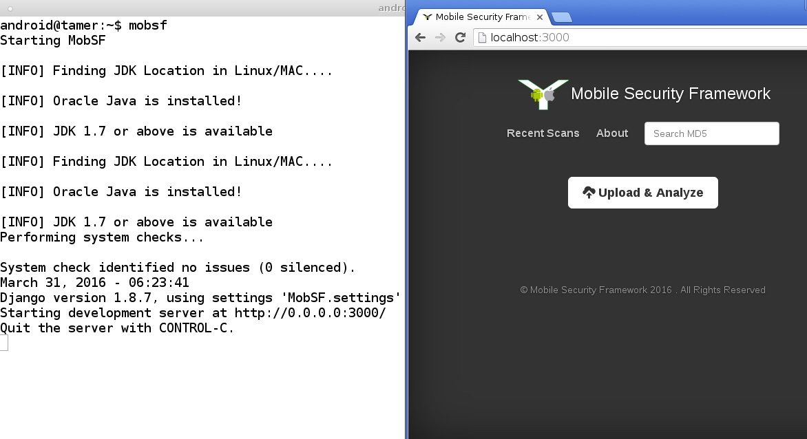

MobSF: Mobile Security Framework
How to Use with AndroidTamer
MobSF is preconfigured in the AndroidTamer Pacakges
Launch MobSF via
android@tamer$ mobsf
Now you just need to navigate to
and you should have running mobsf instance.

At this point you can see the console output, for first time it will create folder in ~ i.e. user home directory.
A folder is created in ~/.mobsf/ which will contain the file
Note: Remember you don't need to run this command as sudo. Run this as normal user.
How is it different from Original Source Code
Original sourcecode: https://github.com/ajinabraham/Mobile-Security-Framework-MobSF
Modified sourcecode: https://github.com/AndroidTamer/Mobile-Security-Framework-MobSF
Major difference is in the approach how tool will store data. In original Code author assumes the standard play that user will git clone and then all data will be stored inside the folder. However for distributions thats not how we wanted it to work so the code that we modify is mainly the settings file where we ensure all data that needs to be dynamic in nature is sourced from the users home directory and not the default location.
This allows flexibility that multiple users can run mobsf and have there own results. This also allows us to keep mobsf updates as distinct as possible. However this also puts us in a position where we can't push mobsf updates as soon as they are released we are working with the author to streamline the process.
Things to keep in mind
- Don't run the command as sudo user.
- If you get error messages around permission denied, those can be safely ignored as all commands are by default in path and hence those are non needed steps.
Software Details
Author: Ajin Abraham
URL: https://github.com/ajinabraham/Mobile-Security-Framework-MobSF
From the website itself
Mobile Security Framework is an intelligent, all-in-one open source mobile application (Android/iOS) automated pen-testing framework capable of performing static, dynamic analysis and web API testing. http://opensecurity.in
Additional References
TODO for Guide
- Add images to show how process works
- Link to the official guide or write your own